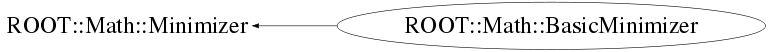

class ROOT::Math::BasicMinimizer: public ROOT::Math::Minimizer
Base Minimizer class, which defines the basic funcionality of various minimizer implementations (apart from Minuit and Minuit2) It provides support for storing parameter values, step size, parameter transofrmation etc.. in case real minimizer impelmentations do not provide such functionality. This is an internal class and should not be used directly by the user @ingroup MultiMin
Function Members (Methods)
public:
| virtual | ~BasicMinimizer() |
| ROOT::Math::BasicMinimizer | BasicMinimizer() |
| virtual void | ROOT::Math::Minimizer::Clear() |
| virtual bool | ROOT::Math::Minimizer::Contour(unsigned int ivar, unsigned int jvar, unsigned int& npoints, double* xi, double* xj) |
| virtual double | ROOT::Math::Minimizer::Correlation(unsigned int i, unsigned int j) const |
| virtual double | ROOT::Math::Minimizer::CovMatrix(unsigned int ivar, unsigned int jvar) const |
| virtual int | ROOT::Math::Minimizer::CovMatrixStatus() const |
| virtual double | ROOT::Math::Minimizer::Edm() const |
| double | ROOT::Math::Minimizer::ErrorDef() const |
| virtual const double* | ROOT::Math::Minimizer::Errors() const |
| virtual bool | FixVariable(unsigned int ivar) |
| virtual bool | ROOT::Math::Minimizer::GetCovMatrix(double* covMat) const |
| virtual bool | ROOT::Math::Minimizer::GetHessianMatrix(double* hMat) const |
| virtual bool | ROOT::Math::Minimizer::GetMinosError(unsigned int ivar, double& errLow, double& errUp, int option = 0) |
| virtual bool | GetVariableSettings(unsigned int ivar, ROOT::Fit::ParameterSettings& varObj) const |
| virtual double | ROOT::Math::Minimizer::GlobalCC(unsigned int ivar) const |
| const ROOT::Math::IMultiGradFunction* | GradObjFunction() const |
| virtual bool | ROOT::Math::Minimizer::Hesse() |
| virtual bool | IsFixedVariable(unsigned int ivar) const |
| bool | ROOT::Math::Minimizer::IsValidError() const |
| unsigned int | ROOT::Math::Minimizer::MaxFunctionCalls() const |
| unsigned int | ROOT::Math::Minimizer::MaxIterations() const |
| virtual const double* | ROOT::Math::Minimizer::MinGradient() const |
| virtual bool | Minimize() |
| virtual double | MinValue() const |
| virtual unsigned int | ROOT::Math::Minimizer::NCalls() const |
| virtual unsigned int | NDim() const |
| virtual unsigned int | NFree() const |
| virtual unsigned int | ROOT::Math::Minimizer::NIterations() const |
| virtual unsigned int | NPar() const |
| const ROOT::Math::IMultiGenFunction* | ObjFunction() const |
| virtual ROOT::Math::MinimizerOptions | ROOT::Math::Minimizer::Options() const |
| double | ROOT::Math::Minimizer::Precision() const |
| int | ROOT::Math::Minimizer::PrintLevel() const |
| void | PrintResult() const |
| virtual void | ROOT::Math::Minimizer::PrintResults() |
| virtual bool | ROOT::Math::Minimizer::ProvidesError() const |
| virtual bool | ReleaseVariable(unsigned int ivar) |
| virtual bool | ROOT::Math::Minimizer::Scan(unsigned int ivar, unsigned int& nstep, double* x, double* y, double xmin = 0, double xmax = 0) |
| void | ROOT::Math::Minimizer::SetDefaultOptions() |
| void | ROOT::Math::Minimizer::SetErrorDef(double up) |
| virtual bool | SetFixedVariable(unsigned int, const string&, double) |
| virtual void | SetFunction(const ROOT::Math::IMultiGenFunction& func) |
| virtual void | SetFunction(const ROOT::Math::IMultiGradFunction& func) |
| virtual bool | SetLimitedVariable(unsigned int ivar, const string& name, double val, double step, double, double) |
| virtual bool | SetLowerLimitedVariable(unsigned int ivar, const string& name, double val, double step, double lower) |
| void | ROOT::Math::Minimizer::SetMaxFunctionCalls(unsigned int maxfcn) |
| void | ROOT::Math::Minimizer::SetMaxIterations(unsigned int maxiter) |
| void | ROOT::Math::Minimizer::SetOptions(const ROOT::Math::MinimizerOptions& opt) |
| void | ROOT::Math::Minimizer::SetPrecision(double prec) |
| void | ROOT::Math::Minimizer::SetPrintLevel(int level) |
| void | ROOT::Math::Minimizer::SetStrategy(int strategyLevel) |
| void | ROOT::Math::Minimizer::SetTolerance(double tol) |
| virtual bool | SetUpperLimitedVariable(unsigned int ivar, const string& name, double val, double step, double upper) |
| void | ROOT::Math::Minimizer::SetValidError(bool on) |
| virtual bool | SetVariable(unsigned int ivar, const string& name, double val, double step) |
| virtual bool | ROOT::Math::Minimizer::SetVariableInitialRange(unsigned int, double, double) |
| virtual bool | SetVariableLimits(unsigned int ivar, double lower, double upper) |
| virtual bool | SetVariableLowerLimit(unsigned int ivar, double lower) |
| virtual bool | SetVariableStepSize(unsigned int ivar, double step) |
| virtual bool | SetVariableUpperLimit(unsigned int ivar, double upper) |
| virtual bool | SetVariableValue(unsigned int ivar, double val) |
| virtual bool | SetVariableValues(const double* x) |
| int | ROOT::Math::Minimizer::Status() const |
| virtual const double* | StepSizes() const |
| int | ROOT::Math::Minimizer::Strategy() const |
| double | ROOT::Math::Minimizer::Tolerance() const |
| const ROOT::Math::MinimTransformFunction* | TransformFunction() const |
| virtual int | VariableIndex(const string& name) const |
| virtual string | VariableName(unsigned int ivar) const |
| virtual const double* | X() const |
protected:
| bool | CheckDimension() const |
| bool | CheckObjFunction() const |
| ROOT::Math::MinimTransformFunction* | CreateTransformation(vector<double>& startValues, const ROOT::Math::IMultiGradFunction* func = 0) |
| void | SetFinalValues(const double* x) |
| void | SetMinValue(double val) |
private:
| ROOT::Math::BasicMinimizer | BasicMinimizer(const ROOT::Math::BasicMinimizer&) |
| ROOT::Math::BasicMinimizer& | operator=(const ROOT::Math::BasicMinimizer& rhs) |
Data Members
protected:
| ROOT::Math::MinimizerOptions | ROOT::Math::Minimizer::fOptions | minimizer options |
| int | ROOT::Math::Minimizer::fStatus | status of minimizer |
| bool | ROOT::Math::Minimizer::fValidError | flag to control if errors have been validated (Hesse has been run in case of Minuit) |
private:
| map<unsigned int,std::pair<double,double> > | fBounds | map specifying the bound using as key the parameter index |
| unsigned int | fDim | |
| double | fMinVal | |
| vector<std::string> | fNames | |
| const ROOT::Math::IMultiGenFunction* | fObjFunc | |
| vector<double> | fSteps | |
| vector<double> | fValues | |
| vector<ROOT::Math::EMinimVariableType> | fVarTypes | vector specifyng the type of variables |
Class Charts



Function documentation
BasicMinimizer(const ROOT::Math::BasicMinimizer& )
usually copying is non trivial, so we make this unaccessible
Copy constructor
{}bool SetLowerLimitedVariable(unsigned int ivar, const string& name, double val, double step, double lower)
set lower limit variable (override if minimizer supports them )
bool SetUpperLimitedVariable(unsigned int ivar, const string& name, double val, double step, double upper)
set upper limit variable (override if minimizer supports them )
bool SetLimitedVariable(unsigned int ivar, const string& name, double val, double step, double , double )
set upper/lower limited variable (override if minimizer supports them )
bool SetFixedVariable(unsigned int , const string& , double )
set fixed variable (override if minimizer supports them )
bool SetVariableValues(const double* x)
set the values of all existing variables (array must be dimensioned to the size of existing parameters)
bool SetVariableStepSize(unsigned int ivar, double step)
set the step size of an already existing variable
bool SetVariableLowerLimit(unsigned int ivar, double lower)
set the lower-limit of an already existing variable
bool SetVariableUpperLimit(unsigned int ivar, double upper)
set the upper-limit of an already existing variable
bool SetVariableLimits(unsigned int ivar, double lower, double upper)
set the limits of an already existing variable
bool IsFixedVariable(unsigned int ivar) const
query if an existing variable is fixed (i.e. considered constant in the minimization) note that by default all variables are not fixed
bool GetVariableSettings(unsigned int ivar, ROOT::Fit::ParameterSettings& varObj) const
get variable settings in a variable object (like ROOT::Fit::ParamsSettings)
std::string VariableName(unsigned int ivar) const
get name of variables (override if minimizer support storing of variable names)
int VariableIndex(const string& name) const
get index of variable given a variable given a name return -1 if variable is not found
const ROOT::Math::IMultiGenFunction * ObjFunction() const
return pointer to used objective function
{ return fObjFunc; }const ROOT::Math::IMultiGradFunction * GradObjFunction() const
return pointer to used gradient object function (NULL if gradient is not supported)
bool CheckDimension() const
bool CheckObjFunction() const
MinimTransformFunction * CreateTransformation(vector<double>& startValues, const ROOT::Math::IMultiGradFunction* func = 0)
void SetFinalValues(const double* x)